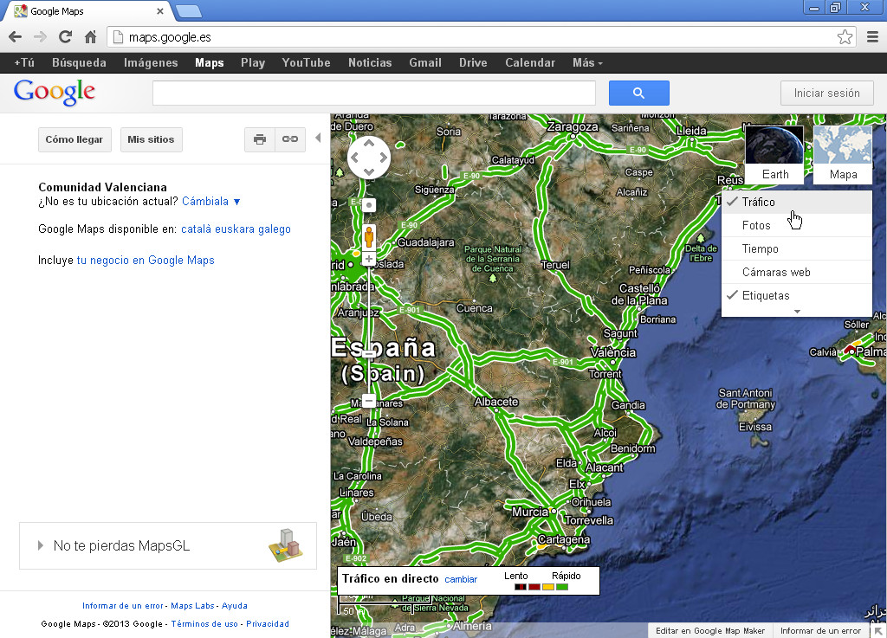
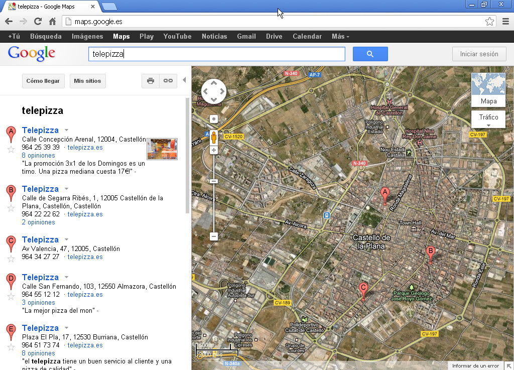

Es un servidor de aplicaciones de mapas en la Web. Ofrece imágenes de mapas desplazables, así como fotos satelitales del mundo e incluso la ruta entre diferentes ubicaciones o imágenes a pie de calle Google Street View.
En su función principal nos permite visualizar con diferentes niveles de precisión cualquier zona del planeta Tierra.
Tenemos botones para ZOOM o podemos utilizar la rueda del ratón.
Para desplazarnos en el mapa utilizamos la técnica de arrastrar y soltar del ratón.
Utilizando el ratón, haz ZOOM hasta ver el mapa del mundo completo.
Utilizando el ratón de nuevo, navega haciendo ZOOM hasta encontrar la Universitat Jaume I.
¿Sabrías encontrar haciendo ZOOM la Estatua de la Libertad?
¿Y la Torre Eiffel?
Google Maps: Capas
Podemos activar o desactivar capas de visualización en los mapas, que nos ofrezcan información geográfica de diferentes tipos:
Vista de satélite.
Vista vectorial.
Etiquetas con carreteras, nombres de pueblos, calles, etc..
Estado del tráfico.
Estado del tiempo.

Práctica de capas
Prueba a activar/desactivar las capas de vista satélite o vista mapa.
Activa ahora la capa del tiempo y mira el tiempo que hace ahora mismo en Gijón.
Desactiva la capa del tiempo y activa la capa del estado del tráfico. ¿Cómo está el tráfico ahora mismo en Madrid? Busca un tramo de congestión marcado en rojo.
Activa ahora la capa de Fotos y haz zoom sobre la zona de Peñíscola y la Sierra de Irta. ¿Ves alguna foto interesante?
Google Maps: Búsqueda de sitios
También podemos realizar búsquedas directamente por nombre de ubicaciones, calles, monumentos, comercios, restaurantes, etc.
Utilizando la caja de búsqueda, de igual manera que hacemos con el buscador web de Google, encontraremos cualquier localización que queramos, siempre y cuando esté registrada en la base de datos de Google.
Si existen varios resultados de una ubicación, una zona en la izquierda de la pantalla nos permitirá navegar por los diferentes resultados.

Práctica de búsqueda
Utiliza el buscador de Google Maps para encontrar la localización del Restaurante 7 de Julio de Castellón.
Utiliza el buscador de Google Maps para encontrar la localización del Estadio del Madrigal de Villarreal.
Utiliza el buscador de Google Maps para encontrar la localización del Mirador de San Nicolás en Granada. ¿Qué problema encuentras?
Ahora vosotros/as. ¿Qué sitio más podemos probar a buscar?
Google Maps: Street Views
Como último nivel de Zoom de Google Maps tenemos las Street Views, que son fotos en 360 grados a pie de calle que nos permiten recorrernos las calles de cualquier ciudad como si estuviéramos andando por ellas.
Podemos ver claramente lo que nos proponen las fotos Street Views en esta página web de demostración:
Utiliza street views (hay que hacer zoom al máximo, o arrastrar el muñequito del control de zoom a la calle que quieras visitar) para hacer una visita a nivel de calle al lugar que tú quieras.
Lo último que vamos a ver es cómo utilizar Google Maps para que nos indique el mejor recorrido para llegar de un punto a otro, ya sea en la misma localidad o en diferentes paises. Podemos utilizar 3 modos:
Trayectos en coche.
Trayectos en transporte público.
Trayectos andando.
Práctica de Cómo llegar
¿Sabrías encontrar la mejor ruta para llegar de Castellón al IKEA de Zaragoza?